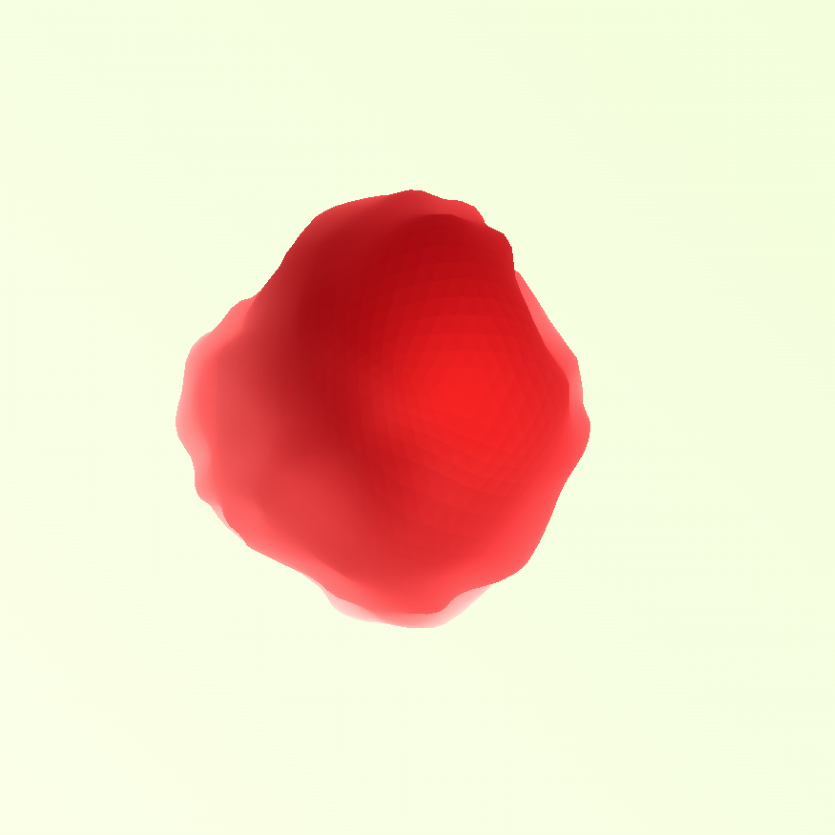
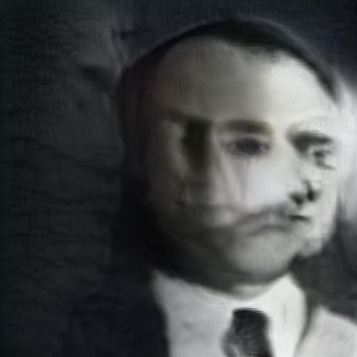
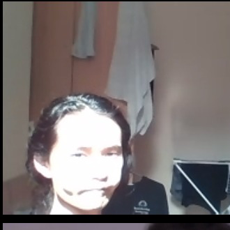
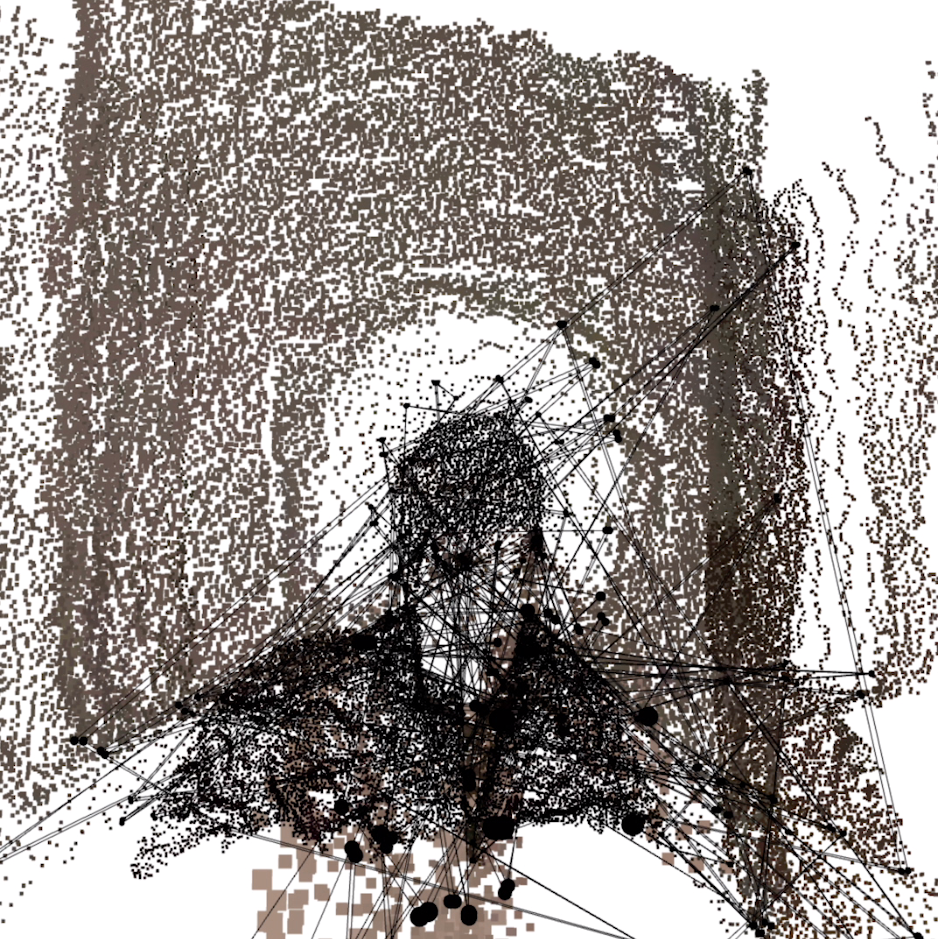
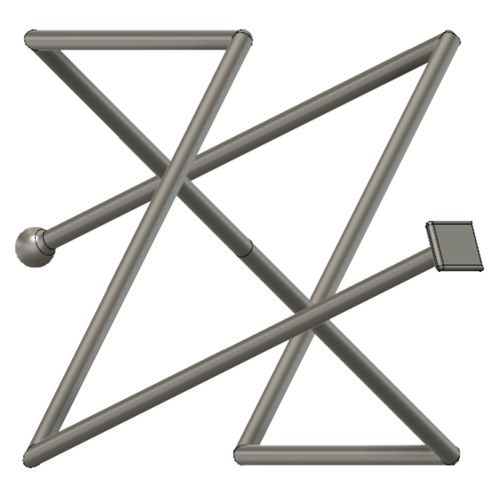
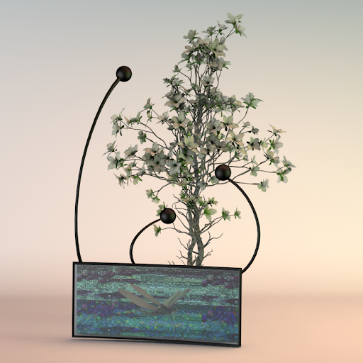
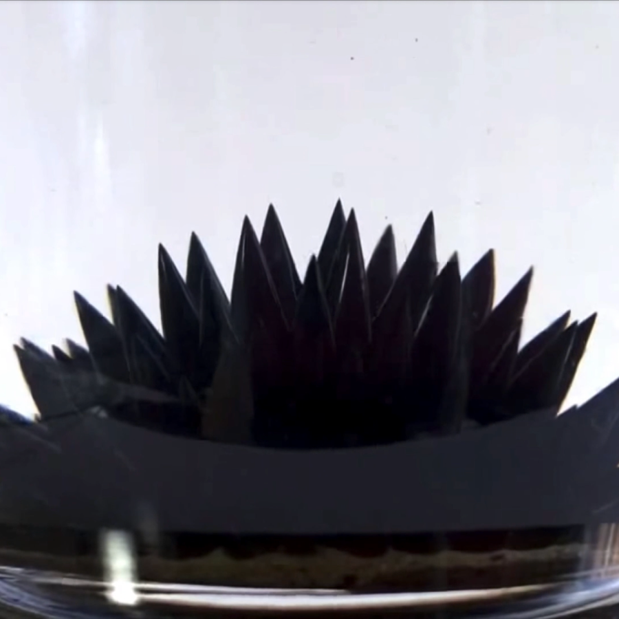
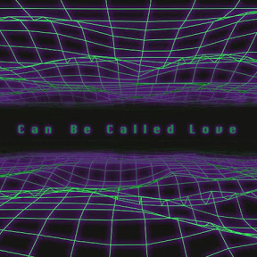
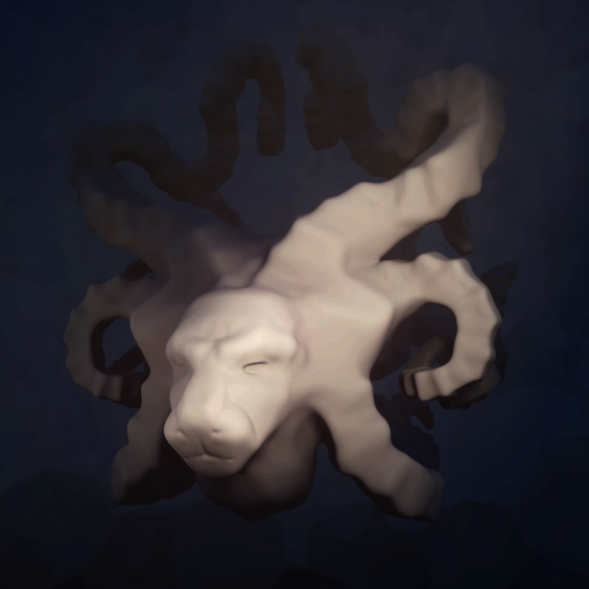

Becky Aston -
Breath Work |
rebeccaaston.com
Breath Work is an embodied investigation into digital work. Wiring the artist into the loop, it is a growing archive of live streamed writing and breathing.
Daniah Alsaleh - Evanesce
Experimentation with GANs, using StyleGAN and GPT 2.
Keita Ikeda - Tribute to Spatiographics
Experiments in describing spaces as images as spaces and then back as images again.
Dongyuan Liu - Break & Merge
How do we think of human and nonhuman, virtual and physical? How do we think of the effects generated by them?
The emergence of technology breaks the boundaries between humans and nonhumans, also between virtual spaces and physical spaces. The intelligent agents which are autonomous and can generate unpredictable data has changed our way of existing in the word. In this project, Audiences will walk through and experience the world constructed based upon the image data “created” by a pre-trained neural network. The skills, such as image processing, creative coding, and audio visual were used behind the project.
Ziwei Wu -
Mimicry |
www.wuziwei.me
“Mimicry” is a multi-screen video installation that was inspired by mimicry. Collaborate with Lingdong Huang A unique way of species protects themselves. Sometimes, species can change their color and pattern relating to the environment. It is based on nature, but not the original nature.
Thus, this work is an experiment that uses a computational way to simulate the process of mimicry. The camera will take images of flowers and plants in real-time, combined with machine learning algorithms to generate the colors and shapes of a new insect that are most suitable for that environment, trying to alter nature.
Also, in the human society, mentioned in Walter Lippmann’s book ‘Public Opinion’, People construct a pseudo- environment that is a subjective, biased, and necessarily abridged mental image of the world, and to a degree, everyone’s pseudo-environment is a fiction. People ‘ live in the same world, but they think and feel in different ones’.
Homage to Nam June Paik ’s TV Garden 1974-77 in exhibition view. Paik imagined a future landscape where technology is an integral part of the natural world. From my perspective, It is an interesting way to combine the best mimicry mode computational creature in the future landscape in 2020.
Shuai Xu -
DIFFUSION |
shuaimxu.com
DIFFUSION is an art experiment that wants to convert the intangible abstraction brain activity, thinking, or feeling into tangible things such as sounds, objects, sculptures.
Baqi Ba -
Can Be Called Love
This work is to explore the illusion that technology brings to people. I am thinking about what the most real illusion is at this moment. For example, in the context of all things connected through internet, seems we have been to every corner of the world, seems we are in various "party", seems we understand happiness and pain, seems we have witnessed the war that took place, seems to have met tens of thousands of people, seems we have recognized the code of the world running, seems we owned the future, seems we have mastered the truth...
Williams Fincannon -
Dream Studies
"Dream Studies" is a series of explorable artworks made in Dreams. Its inception came from a desire for mental and physical exploration, as well as an interest in the qualities and feelings present in our unconscious minds. These artworks are attempts to more vividly communicate these experiences and provide spaces designed to be explored.